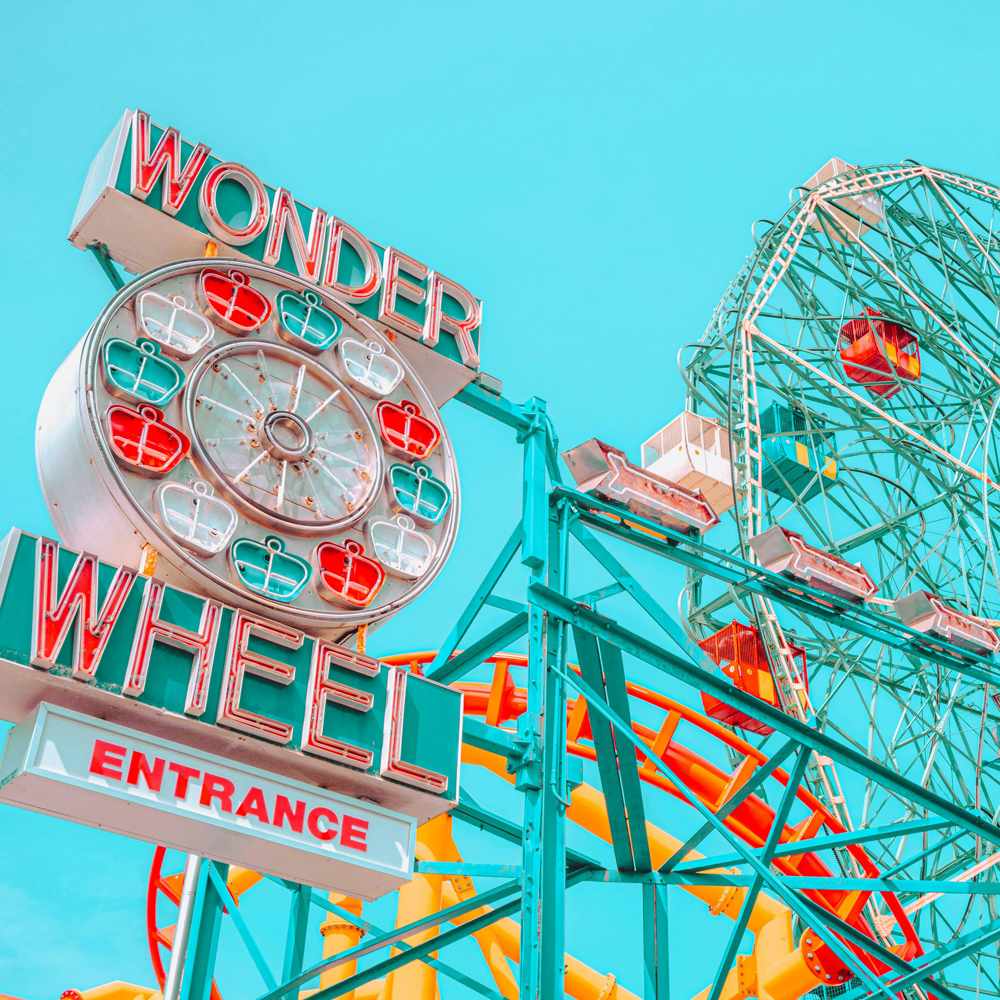

Built in 1920
The Wonder Wheel opened in 1920. Standing 150 feet tall, it became a beloved part of Coney Island's amusement history.

Photo by Kelsey Caroline
The Wonder Wheel is one of Coney Island's most recognizable landmarks. Located in Brooklyn, this famous Ferris wheel has welcomed visitors for generations and offers views of the amusement park and surrounding waterfront.
The Wonder Wheel opened in 1920. Standing 150 feet tall, it became a beloved part of Coney Island's amusement history.
Today, the Wonder Wheel remains a popular attraction at Deno's Wonder Wheel Amusement Park. Its colorful lights and moving cars make it a familiar part of the Coney Island skyline.
The Wonder Wheel is located at Coney Island in Brooklyn, New York.
Learn more about the attraction and its history:
Visit Deno's Wonder Wheel Amusement Park
